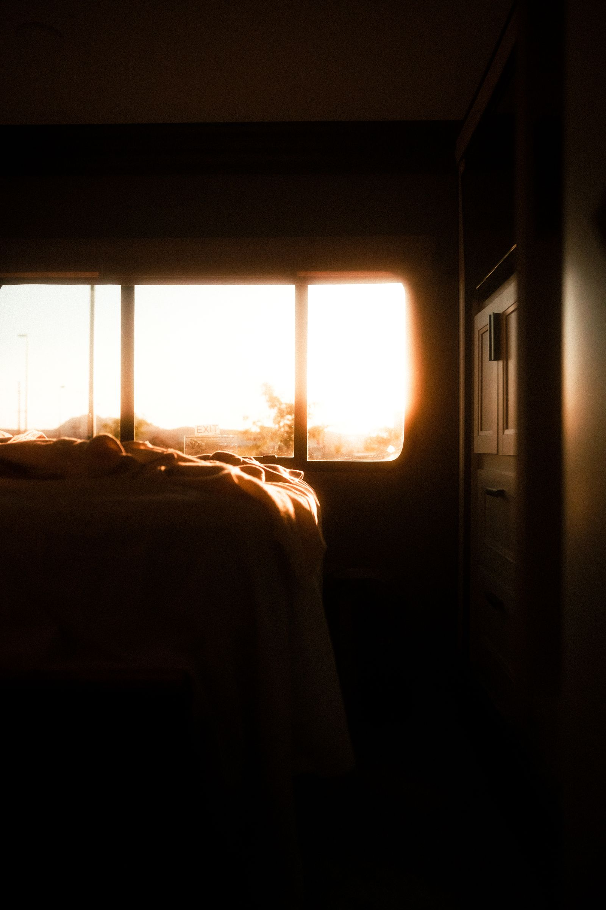
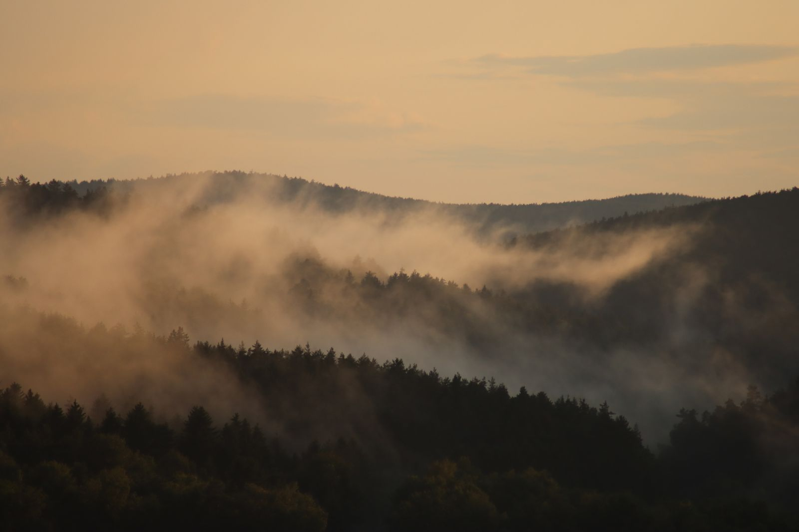
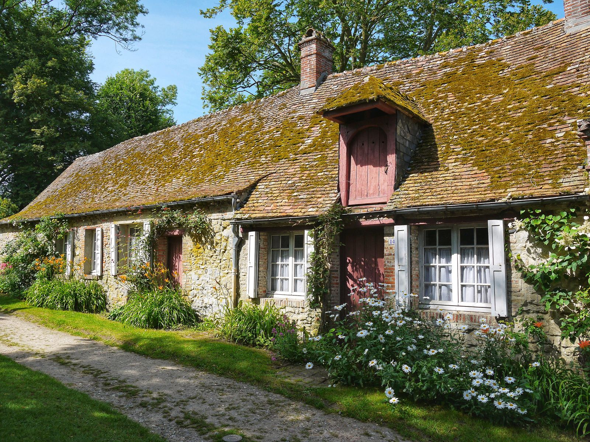
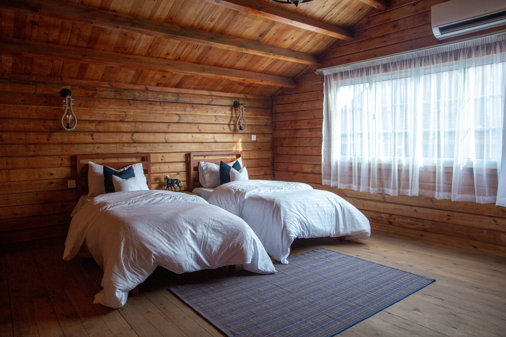
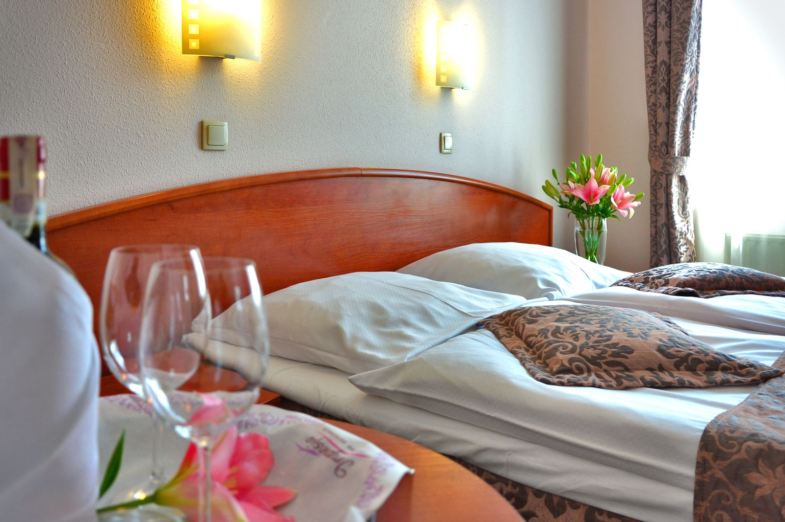
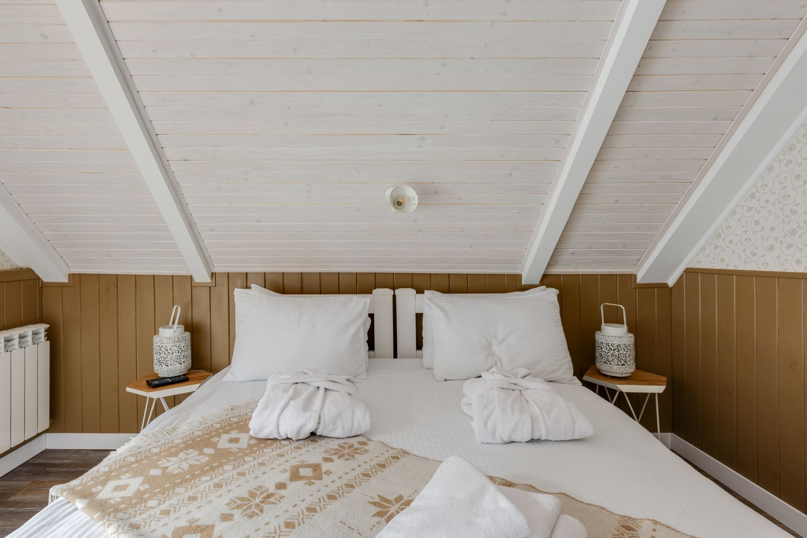
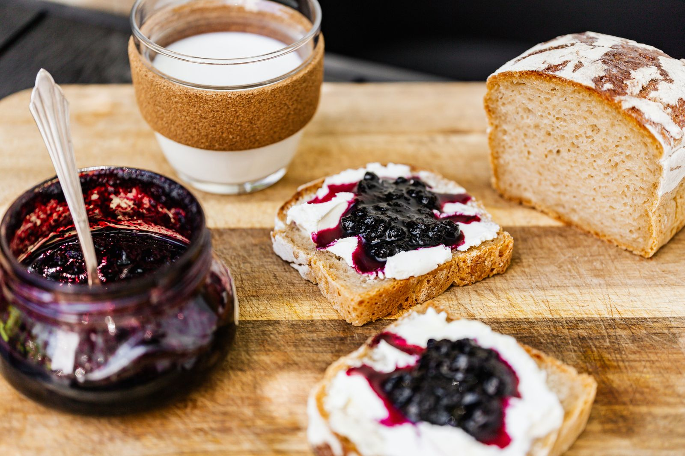
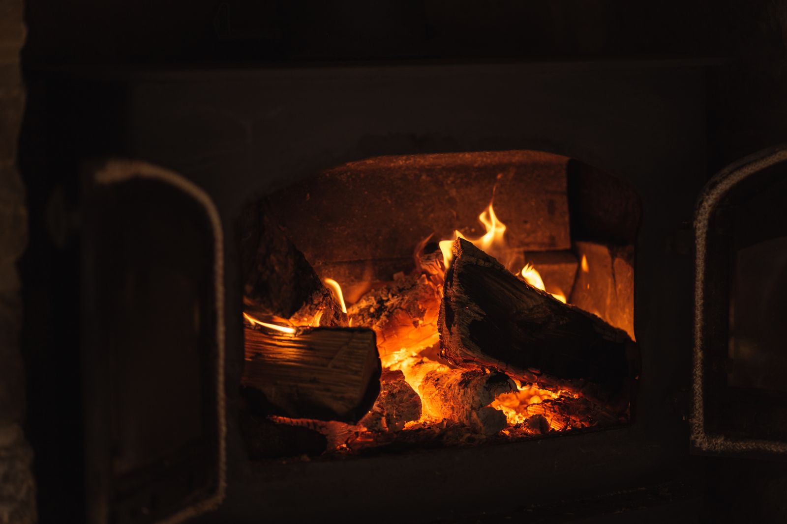

Solaina
Da al sur, sobre la era y el hórreo. Es la que se llena de sol a las once.
- OrientaciónSur
- Cama160 × 200
- Superficie24 m²
- Plazas2
118 € por noche, desayuno incluido

Casa de 1873 · cinco habitaciones · Boimorto, A Coruña
Una casa de piedra con la huerta detrás y el robledal delante. Se desayuna a las nueve, se sale a andar a las diez y no hay prisa en volver.
01 La casa
La casa estuvo veinte años con las contraventanas cerradas y la parte del hórreo caída. En 2019 se abrió entera: se rehízo la cubierta con la teja vieja, se sacó el cemento de las paredes y se devolvió la cal por dentro.
Lo que no se tocó fue lo que importa: el suelo de castaño del primer piso, la lareira de la cocina y el muro de cachotería que separa la era del prado. Somos Uxía Lamas y Roi Cortiñas, vivimos en la casa de al lado y desayunamos con vosotros casi todos los días.
Preguntar por una fecha
02 Habitaciones
Las habitaciones no se llaman 1, 2 y 3: se llaman como lo que se ve desde ellas. Todas con baño propio, desayuno incluido y ninguna con televisión.

Da al sur, sobre la era y el hórreo. Es la que se llena de sol a las once.
118 € por noche, desayuno incluido

Al este, contra el robledal. En junio entra el primer sol a las siete menos cuarto.
96 € por noche, desayuno incluido

Al norte, sobre el muro de cachotería. La más fresca en agosto y la única con sitio para una tercera cama.
132 € por noche, desayuno incluido

Al oeste, sobre los abedules del río. Se pone el sol justo en el marco de la ventana.
108 € por noche, desayuno incluido

Bajo la cubierta, donde se guardaba la paja. Dos ventanas pequeñas al suroeste y el tejado a la vista.
156 € por noche, desayuno incluido
03 Lo que hace la casa por ti
01
De 8:30 a 10:30 en la cocina vieja. Pan de la aldea, huevos de las gallinas del cierre, miel del colmenar de Roi, queso del mercado de Arzúa y tarta de manzana reineta. Los domingos, filloas. Está incluido en todas las habitaciones.
Sin gluten y vegano avisando la víspera.
02
La encendemos con carballo de la finca; tarda una hora larga en coger temperatura, así que se reserva por la mañana para la tarde. Turnos de 90 minutos para un máximo de cuatro personas.
25 € por turno · toallas incluidas.
03
De martes a sábado, avisando con 24 horas. Menú único de tres pasos con lo que haya en la huerta y en el mercado: caldo, un guiso o pescado de la lonja y postre de la casa. Se cena a las 20:30 en la mesa larga.
28 € por persona, bebida aparte.
04
Cuatro bicicletas de paseo con alforjas para bajar al Camino Francés, que pasa a ocho kilómetros. Y un armario de botas de agua y chubasqueros de todas las tallas, porque aquí llueve y no pasa nada.
Bicicleta 15 € el día · botas y chubasquero, gratis.
05
Cuatro recorridos que salen del portón: el del río (5 km, llano), el de los hórreos (9 km), la subida al alto de Sanguiñedo (13 km, con vistas a la sierra) y el enlace con el Camino Francés (8 km). Te los damos en papel y con las cuestas avisadas.
Mapa de la casa, gratis, con la cocina abierta al volver.
04 La mesa

Precios de muestra para esta demostración. Avísanos de alergias e intolerancias al reservar: la cocina es pequeña y se adapta bien.
05 El año
No hay dos meses iguales en el valle, así que tampoco hay una única tarifa. Elige un mes y mira lo que te encuentras.
Temporada baja
Niebla hasta el mediodía y la lareira encendida desde las cinco. El mejor mes para no hacer nada.
Doble desde
82 €
Lluvia media del mes
186 l/m²

06 Voces
Opiniones de muestra, escritas para esta demostración. No proceden de ninguna plataforma ni de ningún huésped real.
Llegamos con la idea de quedarnos dos noches y nos fuimos al cuarto día. La habitación del norte tiene una pared de piedra que da gusto tocar.
El desayuno es de los que te quitan la comida. Y lo de las botas prestadas nos salvó la ruta del río, que la hicimos con orballo del bueno.
Subimos con dos críos a la buhardilla y no querían bajar. Se durmieron oyendo la lluvia en la teja.
La sauna después de trece kilómetros de cuesta debería estar en la Seguridad Social.
07 Reservar
No trabajamos con motor de reservas: preferimos saber quién viene. Cuéntanos las fechas y te decimos qué ventana queda libre.
08 Cómo llegar